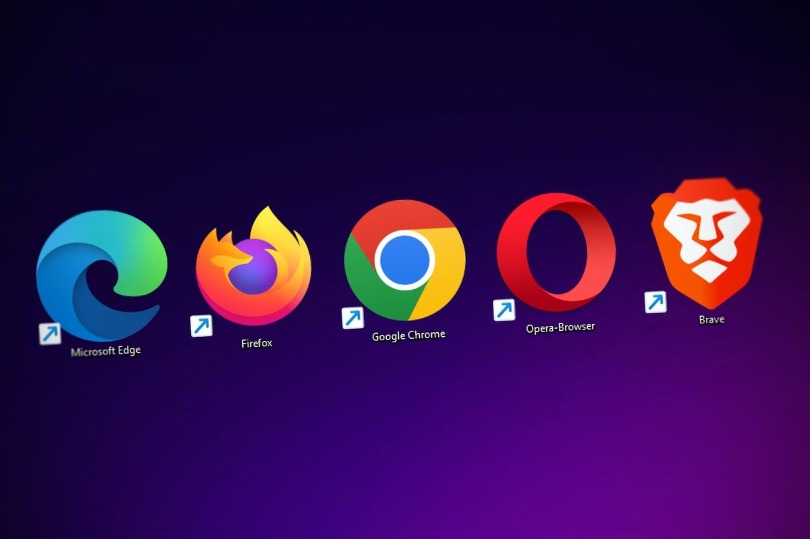

Browser
Pengertian Web Browser

Web browser adalah perangkat lunak yang digunakan untuk membuka halaman web di internet, menampilkan berbagai konten seperti gambar, audio, dan video.
Browser pertama kali ditemukan oleh Tim Berners-Lee dengan nama WorldWideWeb pada tahun 1990. Browser membantu pengguna berselancar di internet untuk mencari informasi.
Perbedaan Browser dan Search Engine
Browser adalah perangkat lunak yang terpasang di komputer untuk membuka halaman web, sedangkan search engine adalah program di internet yang menampilkan daftar website berdasarkan pencarian.
Tanpa browser, Anda tidak dapat mengakses search engine, karena search engine merupakan bagian dari objek internet yang hanya dapat diakses melalui browser.
Cara Kerja Browser
- Pengguna mengetik URL di address bar (contoh: youtube.com).
- Browser mengirim permintaan ke server DNS untuk mendapatkan alamat IP.
- Setelah alamat IP ditemukan, browser mengakses server tersebut.
- Server mengirimkan konten dalam bentuk HTML dan file terkait.
- Browser menampilkan konten yang diminta kepada pengguna.